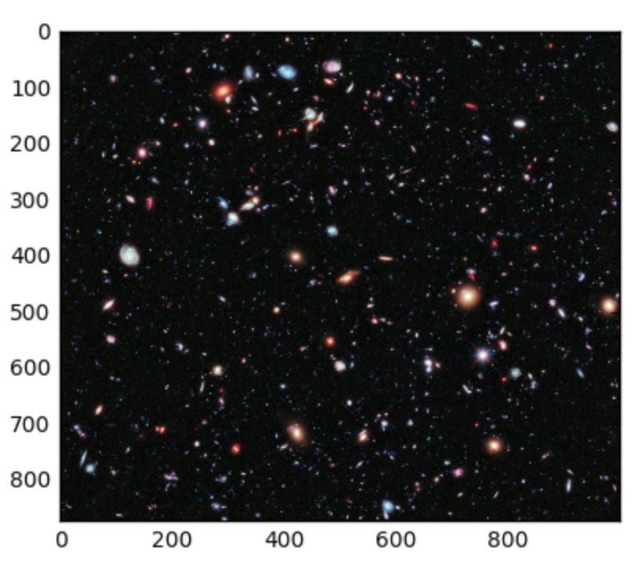
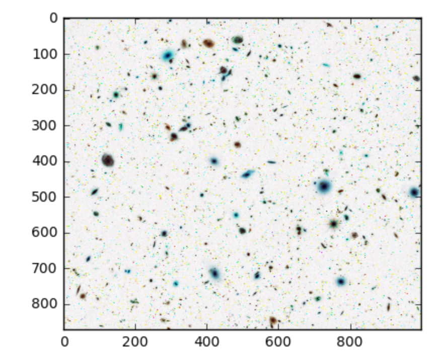

3.9. Transforming Sequences with Comprehensions¶
Python has a very convenient method for describing one list in terms for another call a list comprehension. Comprehensions are very “functional” in their nature and we will make heavy use of these comprehensions moving forward.
3.9.1. List Comprehensions¶
Suppose that we wish to create a list from a sequence of values based on some selection criteria. An easy way to do this type of processing in Python is to use a list comprehension. List comprehensions are concise ways to create lists. The general syntax is:
[<expression> for <item> in <sequence> if <condition>]
where the if clause is optional. For example,
In [1]: mylist = [1,2,3,4,5]
In [2]: yourlist = [item ** 2 for item in mylist]
In [3]: yourlist
Out[3]: [1, 4, 9, 16, 25]
The expression describes each element of the list that is being built. The
for clause iterates through each item in a sequence. The items are filtered
by the if clause if there is one. In the example above, the for
statement lets item take on all the values in the list mylist one after
the other. Each item is then squared before it is added to the list that is
being built. The result is a list of squares of the values in mylist.

The built-in range Python function is a useful tool for generating a
sequence of numbers. The sequence provided by range always starts with 0.
If you ask for range(4), then you will get 4 values starting with 0. In
other words, 0, 1, 2, and finally 3. Notice that 4 is not included since we
started with 0. Likewise, range(10) provides 10 values, 0 through 9.
In [4]: [ i for i in range(4)]
Out[4]: [0, 1, 2, 3]
In [5]: [x for x in range(10)]
���������������������Out[5]: [0, 1, 2, 3, 4, 5, 6, 7, 8, 9]
Note
Computer scientists like to count from 0! We will explain the reason why in the next chapter.
The range function is actually a very powerful function
when it comes to creating sequences of integers. It can take one, two, or three
parameters. We have seen the simplest case of one parameter such as
range(4) which creates [0, 1, 2, 3]. But what if we really want to have
the sequence [1, 2, 3, 4]? We can do this by using a two parameter version
of range where the first parameter is the starting point and the second
parameter is the ending point. The evaluation of range(1,5) produces the
desired sequence. What happened to the 5? In this case we interpret the
parameters of the range function to mean range(start,stop+1).
Note
Why in the world would range not just work like range(start, stop)? Think
about it like this. Because computer scientists like to start counting at 0
instead of 1, range(N) produces a sequence of things that is N long, but
the consequence of this is that the final number of the sequence is N-1. In
the case of start, stop it helps to simply think that the sequence begins
with start and continues as long as the number is less than stop.
Here are a three examples for you to considered.
In [6]: [i for i in range(4)]
Out[6]: [0, 1, 2, 3]
In [7]: [x for x in range(1, 10)]
���������������������Out[7]: [1, 2, 3, 4, 5, 6, 7, 8, 9]
In [8]: [item for item in range(1,10,2)]
���������������������������������������������������������Out[8]: [1, 3, 5, 7, 9]
Notice that the last call to range added the third parameter, which
represents the step size. In this case, every item is 2 more than the last
item. Making a list that counts down from some starting number can be
accomplished using a negative step size.
In [9]: [ i for i in range(10, 0, -1)]
Out[9]: [10, 9, 8, 7, 6, 5, 4, 3, 2, 1]
Check your understanding
-
rec-5-42: In the command range(3, 10, 2), what does the second argument (10) specify?
- (A) Range should generate a list that stops at 9 (including 9).
- Range will generate the list [3, 5, 7, 9].
- (B) Range should generate a list that starts at 10 (including 10).
- The first argument (3) tells range what number to start at.
- (C) Range should generate a list starting at 3 that stops at 10 (including 10).
- Range will always stop at the number before (not including) the specified ending point for the list.
- (D) Range should generate a list using every 10th number between the start and the stopping number.
- The third argument (2) tells range how many numbers to skip between each element in the list.
-
rec-5-43: What command correctly generates the list [2, 5, 8]?
- (A) range(2, 5, 8)
- This command generates the list [2] because the first number (2) tells range where to start, the second number tells range where to end (5, not inclusive) and the third number tells range how many numbers to skip between elements (8). Since 10>= 8, there is only one number in this list.
- (B) range(2, 8, 3)
- This command generates the list [2, 5] because 8 is not less than 8 (the specified ending number).
- (C) range(2, 10, 3)
- The first number is the starting point, the second is the maximum allowed, and the third is the amount to increment by.
- (D) range(8, 1, -3)
- This command generates the list [8, 5, 3] because it starts at 8, ends at (or above 1), and skips every third number going down.
-
rec-5-44: What happens if you give range only one argument? For example: range(4)
- (A) It will generate a list starting at 0, with every number included up to but not including the argument it was passed.
- Yes, if you only give one number to range it starts with 0 and ends before the number specified incrementing by 1.
- (B) It will generate a list starting at 1, with every number up to but not including the argument it was passed.
- Range starts at 0 unless otherwise specified.
- (C) It will generate a list starting at 1, with every number including the argument it was passed.
- Range starts at 0 unless otherwise specified, and never includes its ending element (which is the argument it was passed).
- (D) It will cause an error: range always takes exactly 3 arguments.
- If range is passed only one argument, it interprets that argument as the end of the list (not inclusive).
One final note about the range function in python: it is lazy! Notice that
trying to evaluate this function by itself doesn’t return the list. Instead, it
returns a generator object that will wait as long as possible to generate
this list.
In [10]: range(5)
Out[10]: range(0, 5)
We have a number of methods for forcing range to complete the process
including comprehensions and the list conversion function.
In [11]: list(range(5))
Out[11]: [0, 1, 2, 3, 4]
Note
There are a number of lazy constructions in Python 3. We will look at these features in a later chapter.
An alternative method for generating odd values involves using a Boolean function to filter items out of our list using the optional if clause. For example, let’s compute the cube root for all odd values less than 10.
In [12]: is_odd = lambda x: x % 2 == 1
In [13]: cube_root = lambda x: x**(1/3)
In [14]: [cube_root(x) for x in range(10) if is_odd(x)]
Out[14]:
[1.0,
1.4422495703074083,
1.7099759466766968,
1.912931182772389,
2.080083823051904]
Why might we want to use this version of the comprehension? Here we are using two explicit abstractions to describe the intent of our code. This should make it easier for someone that later reads through the code to understand the meaning of this construction, i.e. that we are taking the cube root of odd numbers up to 10.
Check your understanding
- (A) [4,2,8,6,5]
- Items from alist are doubled before being placed in blist.
- (B) [8,4,16,12,10]
- Not all the items in alist are to be included in blist. Look at the if clause.
- (C) 10
- The result needs to be a list.
- (D) [10].
- Yes, 5 is the only odd number in alist. It is doubled before being placed in blist.
rec-5-45: What is printed by the following statements?
alist = [4,2,8,6,5]
blist = [num*2 for num in alist if num%2==1]
print(blist)
Note
This workspace is provided for your convenience. You can use this activecode window to try out anything you like.
3.9.2. List Comprehensions for Two Dimensional Data¶
Two dimensional (2D) data is data that can be displayed in a table. An examples of two dimensional data include matrices and images. We can use list comprehensions to transform and filter 2D data by embedding one list comprehension in another.
Consider the following matrix of integers.
One method for representing this matrix in Python is with a list of lists.
In [15]: mat = [[1,2,3],[4,5,6],[7,8,9]]
In [16]: mat
Out[16]: [[1, 2, 3], [4, 5, 6], [7, 8, 9]]
To write a comprehension that transforms 2D data into another 2D list, we embed a comprehension inside a comprehension.
For example, the following code will generate a new matrix that contains the square of each value from the first matrix.
In [17]: new_mat = [[e**2 for e in row] for row in mat]
In [18]: new_mat
Out[18]: [[1, 4, 9], [16, 25, 36], [49, 64, 81]]
For this example, we will transform an image by replacing all of the black pixels with white pixels. Recall that an image from skimage is stored as a 3D array of RGB values, but can be iterated over as a 2D matrix of tuples of 3 values. Consider the following code,
from skimage import data
import matplotlib.pylab as plt
import numpy as np
%matplotlib inline
hub = data.hubble_deep_field()
plt.imshow(hub)
which displays the following image.
The RGB code for (pure) black is (0,0,0). The following code splits the task into three parts. First, the function is_black checks that each color is 0. Next, the function black_to_white switches black to white (rgb(255,255,255)), but otherwise leaves the color as is. Finally, a 2D comprehension is used to make a new image matrix or tuples. Note that this array needs to be converted to a numpy array.
# Black RGB is (0, 0, 0), we check that all colors == 0
is_black = lambda t: all([col == 0 for col in t])
# Replace black (0,0,0) with white (255, 255, 255) else leave it alone
black_to_white = lambda t: (255,255,255) if is_black(t) else t
#apply black_to_white to each RGB tuple
new_img = np.array([[black_to_white(tup) for tup in row] for row in hub])
plt.imshow(new_img)
The resulting image is shown below.
3.9.3. Character classification¶
It is often helpful to examine a character and test whether it is upper- or
lowercase, or whether it is a character or a digit. The string module
provides several constants that are useful for these purposes. One of these,
string.digits is equivalent to “0123456789”. It can be used to check if a
character is a digit using the in operator.
The string string.ascii_lowercase contains all of the ascii letters that the
system considers to be lowercase. Similarly, string.ascii_uppercase contains
all of the uppercase letters. string.punctuation comprises all the
characters considered to be punctuation. Try the following and see what you get.
In [19]: import string
In [20]: string.ascii_lowercase
Out[20]: 'abcdefghijklmnopqrstuvwxyz'
In [21]: string.ascii_uppercase
��������������������������������������Out[21]: 'ABCDEFGHIJKLMNOPQRSTUVWXYZ'
In [22]: string.digits
����������������������������������������������������������������������������Out[22]: '0123456789'
In [23]: string.punctuation
��������������������������������������������������������������������������������������������������Out[23]: '!"#$%&\'()*+,-./:;<=>?@[\\]^_`{|}~'
For more information consult the string module documentation (see Global
Module Index).
We can use list comprehensions to describe a new string, but we need to convert
the result back to a string using the str conversion function. For example,
let’s remove all of the punctuation from a string.
In [24]: zen_of_python = '''The Zen of Python, by Tim Peters
....: Beautiful is better than ugly.
....: Explicit is better than implicit.
....: Simple is better than complex.
....: Complex is better than complicated.
....: Flat is better than nested.
....: Sparse is better than dense.
....: Readability counts.
....: Special cases aren't special enough to break the rules.
....: Although practicality beats purity.
....: Errors should never pass silently.
....: Unless explicitly silenced.
....: In the face of ambiguity, refuse the temptation to guess.
....: There should be one-- and preferably only one --obvious way to do it.
....: Although that way may not be obvious at first unless you're Dutch.
....: Now is better than never.
....: Although never is often better than *right* now.
....: If the implementation is hard to explain, it's a bad idea.
....: If the implementation is easy to explain, it may be a good idea.
....: Namespaces are one honking great idea -- let's do more of those!'''
....:
In [25]: zen_list_no_punc = [ch for ch in zen_of_python if ch not in string.punctuation]
In [26]: print(zen_list_no_punc)
['T', 'h', 'e', ' ', 'Z', 'e', 'n', ' ', 'o', 'f', ' ', 'P', 'y', 't', 'h', 'o', 'n', ' ', 'b', 'y', ' ', 'T', 'i', 'm', ' ', 'P', 'e', 't', 'e', 'r', 's', '\n', 'B', 'e', 'a', 'u', 't', 'i', 'f', 'u', 'l', ' ', 'i', 's', ' ', 'b', 'e', 't', 't', 'e', 'r', ' ', 't', 'h', 'a', 'n', ' ', 'u', 'g', 'l', 'y', '\n', 'E', 'x', 'p', 'l', 'i', 'c', 'i', 't', ' ', 'i', 's', ' ', 'b', 'e', 't', 't', 'e', 'r', ' ', 't', 'h', 'a', 'n', ' ', 'i', 'm', 'p', 'l', 'i', 'c', 'i', 't', '\n', 'S', 'i', 'm', 'p', 'l', 'e', ' ', 'i', 's', ' ', 'b', 'e', 't', 't', 'e', 'r', ' ', 't', 'h', 'a', 'n', ' ', 'c', 'o', 'm', 'p', 'l', 'e', 'x', '\n', 'C', 'o', 'm', 'p', 'l', 'e', 'x', ' ', 'i', 's', ' ', 'b', 'e', 't', 't', 'e', 'r', ' ', 't', 'h', 'a', 'n', ' ', 'c', 'o', 'm', 'p', 'l', 'i', 'c', 'a', 't', 'e', 'd', '\n', 'F', 'l', 'a', 't', ' ', 'i', 's', ' ', 'b', 'e', 't', 't', 'e', 'r', ' ', 't', 'h', 'a', 'n', ' ', 'n', 'e', 's', 't', 'e', 'd', '\n', 'S', 'p', 'a', 'r', 's', 'e', ' ', 'i', 's', ' ', 'b', 'e', 't', 't', 'e', 'r', ' ', 't', 'h', 'a', 'n', ' ', 'd', 'e', 'n', 's', 'e', '\n', 'R', 'e', 'a', 'd', 'a', 'b', 'i', 'l', 'i', 't', 'y', ' ', 'c', 'o', 'u', 'n', 't', 's', '\n', 'S', 'p', 'e', 'c', 'i', 'a', 'l', ' ', 'c', 'a', 's', 'e', 's', ' ', 'a', 'r', 'e', 'n', 't', ' ', 's', 'p', 'e', 'c', 'i', 'a', 'l', ' ', 'e', 'n', 'o', 'u', 'g', 'h', ' ', 't', 'o', ' ', 'b', 'r', 'e', 'a', 'k', ' ', 't', 'h', 'e', ' ', 'r', 'u', 'l', 'e', 's', '\n', 'A', 'l', 't', 'h', 'o', 'u', 'g', 'h', ' ', 'p', 'r', 'a', 'c', 't', 'i', 'c', 'a', 'l', 'i', 't', 'y', ' ', 'b', 'e', 'a', 't', 's', ' ', 'p', 'u', 'r', 'i', 't', 'y', '\n', 'E', 'r', 'r', 'o', 'r', 's', ' ', 's', 'h', 'o', 'u', 'l', 'd', ' ', 'n', 'e', 'v', 'e', 'r', ' ', 'p', 'a', 's', 's', ' ', 's', 'i', 'l', 'e', 'n', 't', 'l', 'y', '\n', 'U', 'n', 'l', 'e', 's', 's', ' ', 'e', 'x', 'p', 'l', 'i', 'c', 'i', 't', 'l', 'y', ' ', 's', 'i', 'l', 'e', 'n', 'c', 'e', 'd', '\n', 'I', 'n', ' ', 't', 'h', 'e', ' ', 'f', 'a', 'c', 'e', ' ', 'o', 'f', ' ', 'a', 'm', 'b', 'i', 'g', 'u', 'i', 't', 'y', ' ', 'r', 'e', 'f', 'u', 's', 'e', ' ', 't', 'h', 'e', ' ', 't', 'e', 'm', 'p', 't', 'a', 't', 'i', 'o', 'n', ' ', 't', 'o', ' ', 'g', 'u', 'e', 's', 's', '\n', 'T', 'h', 'e', 'r', 'e', ' ', 's', 'h', 'o', 'u', 'l', 'd', ' ', 'b', 'e', ' ', 'o', 'n', 'e', ' ', 'a', 'n', 'd', ' ', 'p', 'r', 'e', 'f', 'e', 'r', 'a', 'b', 'l', 'y', ' ', 'o', 'n', 'l', 'y', ' ', 'o', 'n', 'e', ' ', 'o', 'b', 'v', 'i', 'o', 'u', 's', ' ', 'w', 'a', 'y', ' ', 't', 'o', ' ', 'd', 'o', ' ', 'i', 't', '\n', 'A', 'l', 't', 'h', 'o', 'u', 'g', 'h', ' ', 't', 'h', 'a', 't', ' ', 'w', 'a', 'y', ' ', 'm', 'a', 'y', ' ', 'n', 'o', 't', ' ', 'b', 'e', ' ', 'o', 'b', 'v', 'i', 'o', 'u', 's', ' ', 'a', 't', ' ', 'f', 'i', 'r', 's', 't', ' ', 'u', 'n', 'l', 'e', 's', 's', ' ', 'y', 'o', 'u', 'r', 'e', ' ', 'D', 'u', 't', 'c', 'h', '\n', 'N', 'o', 'w', ' ', 'i', 's', ' ', 'b', 'e', 't', 't', 'e', 'r', ' ', 't', 'h', 'a', 'n', ' ', 'n', 'e', 'v', 'e', 'r', '\n', 'A', 'l', 't', 'h', 'o', 'u', 'g', 'h', ' ', 'n', 'e', 'v', 'e', 'r', ' ', 'i', 's', ' ', 'o', 'f', 't', 'e', 'n', ' ', 'b', 'e', 't', 't', 'e', 'r', ' ', 't', 'h', 'a', 'n', ' ', 'r', 'i', 'g', 'h', 't', ' ', 'n', 'o', 'w', '\n', 'I', 'f', ' ', 't', 'h', 'e', ' ', 'i', 'm', 'p', 'l', 'e', 'm', 'e', 'n', 't', 'a', 't', 'i', 'o', 'n', ' ', 'i', 's', ' ', 'h', 'a', 'r', 'd', ' ', 't', 'o', ' ', 'e', 'x', 'p', 'l', 'a', 'i', 'n', ' ', 'i', 't', 's', ' ', 'a', ' ', 'b', 'a', 'd', ' ', 'i', 'd', 'e', 'a', '\n', 'I', 'f', ' ', 't', 'h', 'e', ' ', 'i', 'm', 'p', 'l', 'e', 'm', 'e', 'n', 't', 'a', 't', 'i', 'o', 'n', ' ', 'i', 's', ' ', 'e', 'a', 's', 'y', ' ', 't', 'o', ' ', 'e', 'x', 'p', 'l', 'a', 'i', 'n', ' ', 'i', 't', ' ', 'm', 'a', 'y', ' ', 'b', 'e', ' ', 'a', ' ', 'g', 'o', 'o', 'd', ' ', 'i', 'd', 'e', 'a', '\n', 'N', 'a', 'm', 'e', 's', 'p', 'a', 'c', 'e', 's', ' ', 'a', 'r', 'e', ' ', 'o', 'n', 'e', ' ', 'h', 'o', 'n', 'k', 'i', 'n', 'g', ' ', 'g', 'r', 'e', 'a', 't', ' ', 'i', 'd', 'e', 'a', ' ', ' ', 'l', 'e', 't', 's', ' ', 'd', 'o', ' ', 'm', 'o', 'r', 'e', ' ', 'o', 'f', ' ', 't', 'h', 'o', 's', 'e']
In [27]: zen_string_no_punc = ''.join(zen_list_no_punc)
In [28]: print(zen_string_no_punc)
The Zen of Python by Tim Peters
Beautiful is better than ugly
Explicit is better than implicit
Simple is better than complex
Complex is better than complicated
Flat is better than nested
Sparse is better than dense
Readability counts
Special cases arent special enough to break the rules
Although practicality beats purity
Errors should never pass silently
Unless explicitly silenced
In the face of ambiguity refuse the temptation to guess
There should be one and preferably only one obvious way to do it
Although that way may not be obvious at first unless youre Dutch
Now is better than never
Although never is often better than right now
If the implementation is hard to explain its a bad idea
If the implementation is easy to explain it may be a good idea
Namespaces are one honking great idea lets do more of those
Note
You can contemplate the zen of Python anytime by executing import this.
In [29]: import this
The Zen of Python, by Tim Peters
Beautiful is better than ugly.
Explicit is better than implicit.
Simple is better than complex.
Complex is better than complicated.
Flat is better than nested.
Sparse is better than dense.
Readability counts.
Special cases aren't special enough to break the rules.
Although practicality beats purity.
Errors should never pass silently.
Unless explicitly silenced.
In the face of ambiguity, refuse the temptation to guess.
There should be one-- and preferably only one --obvious way to do it.
Although that way may not be obvious at first unless you're Dutch.
Now is better than never.
Although never is often better than *right* now.
If the implementation is hard to explain, it's a bad idea.
If the implementation is easy to explain, it may be a good idea.
Namespaces are one honking great idea -- let's do more of those!
Note
This workspace is provided for your convenience. You can use this activecode window to try out anything you like.